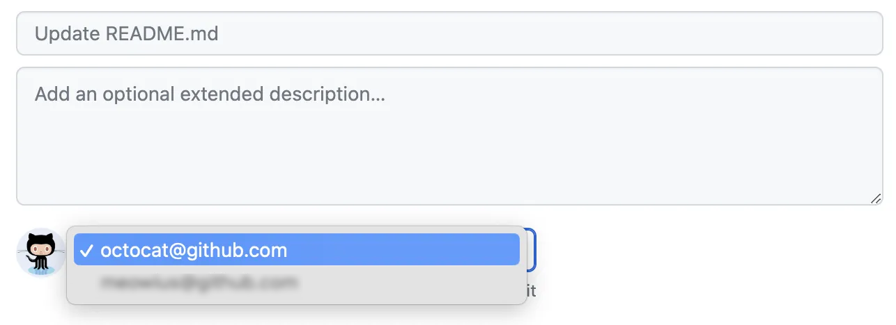

On GitHub, navigate to the main page of the repository.
Under the repository name, click the Security and quality tab. If you cannot see the " Security and quality" tab, select the dropdown menu, and then click Security and quality.
In the left sidebar, under "Reporting", click Security policy.
Click Start setup.
In the new SECURITY.md file, add information about supported versions of your project and how to report a vulnerability.
Click Commit changes...
In the "Commit message" field, type a short, meaningful commit message that describes the change you made to the file. You can attribute the commit to more than one author in the commit message. For more information, see Creating a commit with multiple authors.
If you have more than one email address associated with your account on GitHub, click the email address drop-down menu and select the email address to use as the Git author email address. Only verified email addresses appear in this drop-down menu. If you enabled email address privacy, then a no-reply will be the default commit author email address. For more information about the exact form the no-reply email address can take, see Setting your commit email address.

Below the commit message fields, decide whether to add your commit to the current branch or to a new branch. If your current branch is the default branch, you should choose to create a new branch for your commit and then create a pull request. For more information, see Creating a pull request.

Click Commit changes or Propose changes.